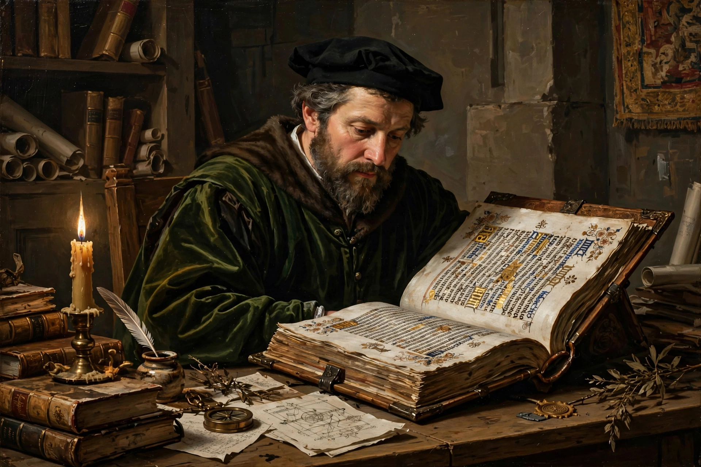

Renaissance humanism

Renaissance humanism was a worldview centred on the nature and importance of humanity, emerging from the study of classical antiquity. It originated during the Italian Renaissance and spread across Europe in the 14th–16th centuries. Humanists revived the study of Latin and Greek classics, emphasising the studia humanitatis — grammar, rhetoric, history, poetry and moral philosophy — as education for civic life. The German word Humanismus, from which "humanism" derives, was coined in the 19th century.
Origins and development
The movement is conventionally traced to Petrarch (1304–1374), who championed Cicero and Virgil and criticised scholastic philosophy. In Florence, chancellors such as Coluccio Salutati and Leonardo Bruni fused classical learning with republican civic ideals — "civic humanism". Humanists hunted for lost manuscripts in monastic libraries (Poggio Bracciolini famously recovered Lucretius' De rerum natura in 1417), produced critical editions, and, after the fall of Constantinople in 1453, learned Greek from Byzantine émigré scholars such as Manuel Chrysoloras.
Themes
- Ad fontes — "to the sources": return to original texts rather than medieval commentaries.
- Dignity of man — most famously in Pico della Mirandola's Oration on the Dignity of Man (1486).
- Eloquence and rhetoric as the basis of education and public life.
- Philology — Lorenzo Valla used textual criticism to expose the Donation of Constantine as a forgery (1440).
- Imitation of classical style and moral exemplars from history.
Leading figures
Beyond Italy, humanism flourished across Europe: Desiderius Erasmus of Rotterdam edited the New Testament in Greek and corresponded with scholars continent-wide; Thomas More wrote Utopia (1516); Juan Luis Vives worked in Spain and England; and Guillaume Budé promoted Greek studies in France. The printing press, especially the Aldine Press in Venice, spread humanist texts rapidly and cheaply.
Humanism and the Church
Most Renaissance humanists were Christians; humanism was not inherently anti-religious, though its textual methods were later applied to scripture and influenced both the Reformation and Catholic reform. Erasmus' biblical scholarship is a notable example. Some popes, notably Nicholas V and Pius II (himself a humanist), patronised humanist learning.
Legacy
Humanist education shaped European universities and grammar schools for centuries, displacing scholastic curricula and centring the humanities. Its emphases on textual criticism, historical consciousness and individual dignity fed into later intellectual movements, including the Enlightenment, and the modern usage of "humanism" for secular philosophies derives partly from this heritage.